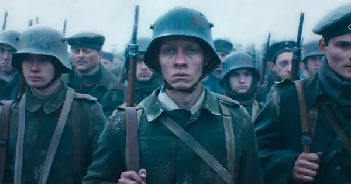

O filme conta a história de Paul, um jovem soldado alemão que vai para a guerra com os amigos. Ele pensa que vai ser uma aventura, mas descobre que a guerra é muito dura.
O filme de 2022 foi realizado por Edward Berger e ganhou 4 Óscares.

- Passa-se em 1917
- Baseia-se no livro de Erich Maria Remarque
- Mostra como a guerra afeta os jovens